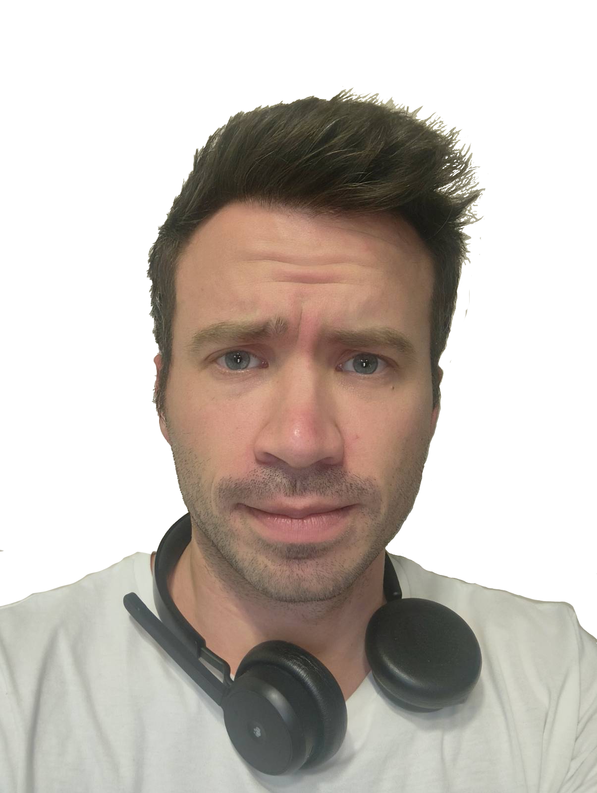

Om mig
Martin heter jag. Läser på MittUniversitetet inom området Webbdesign. Uppväxt på västkusten, i den lilla staden Uddevalla.
Har börjat att doppa fötterna i bildredigering genom skapandet av denna sidan. Har varit en hel del utmaningar då jag har problem med mitt färgseende, svårigheter när det kommer att se skillnader mellan rött och grönt fram för allt, så har varit en utmananade uppgift. Men går att arbeta sig runt det ändå. Temat med djur som jag har valt var ganska självklart då det finns ett starkt intresse hos mig för dessa tre djur.